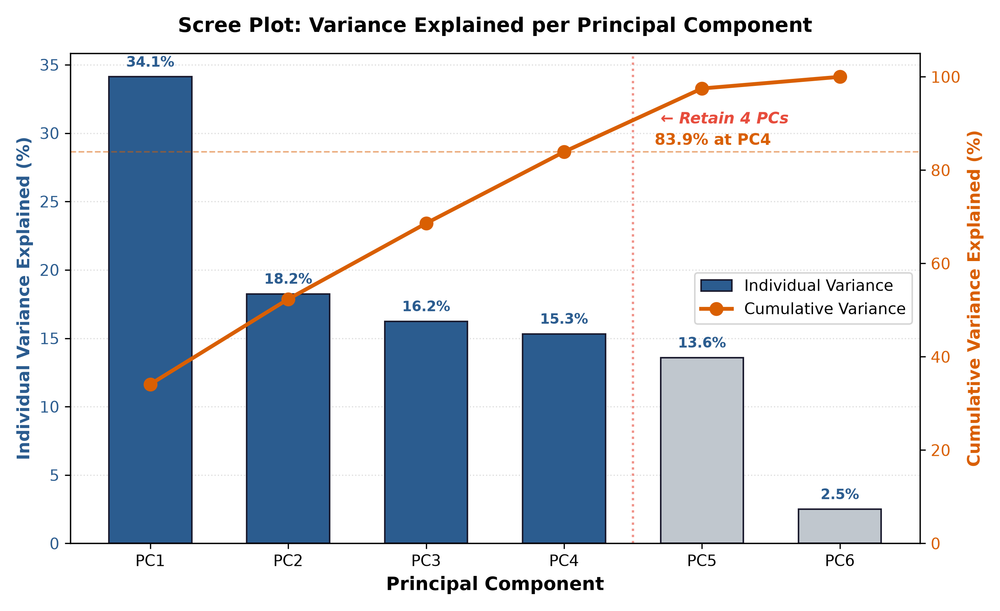
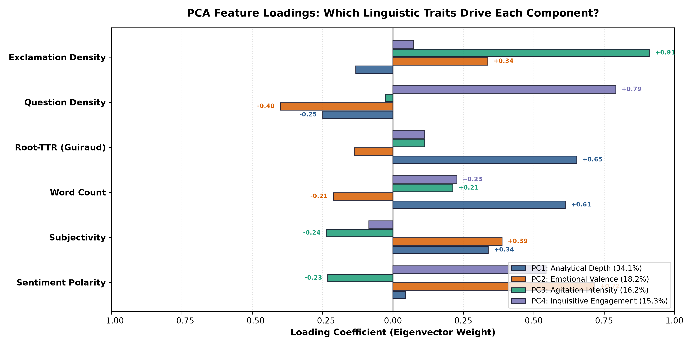
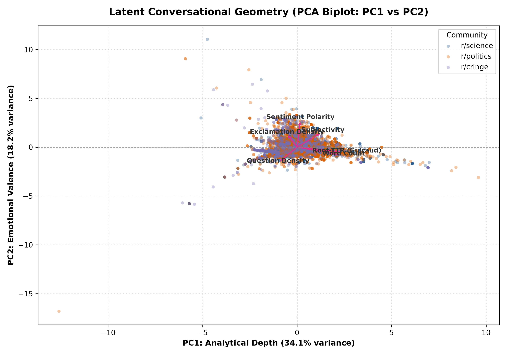
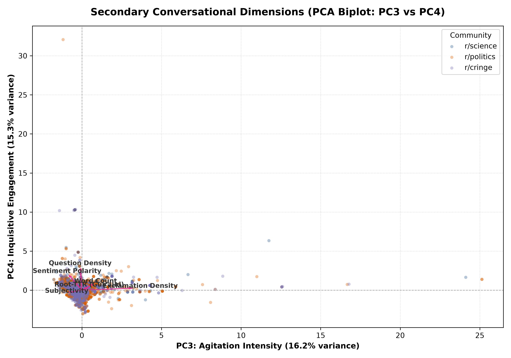
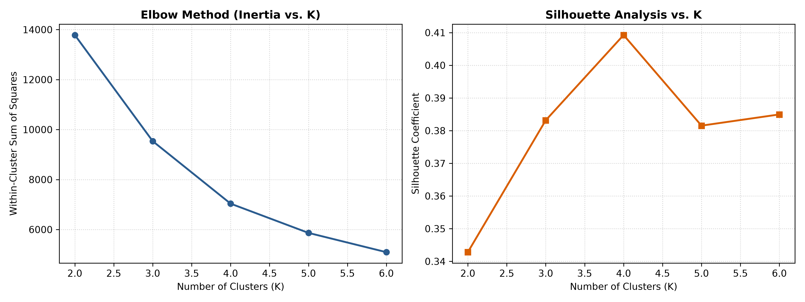
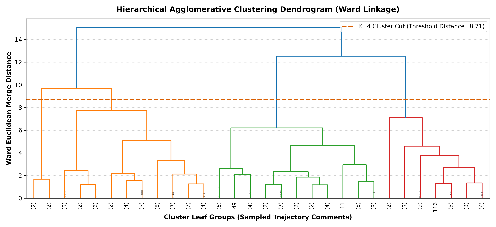
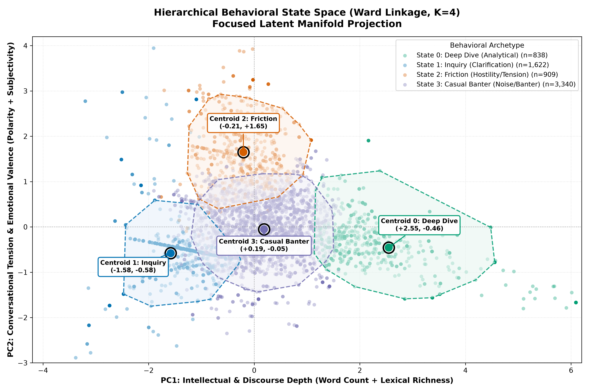
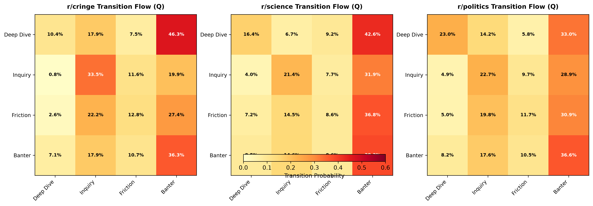
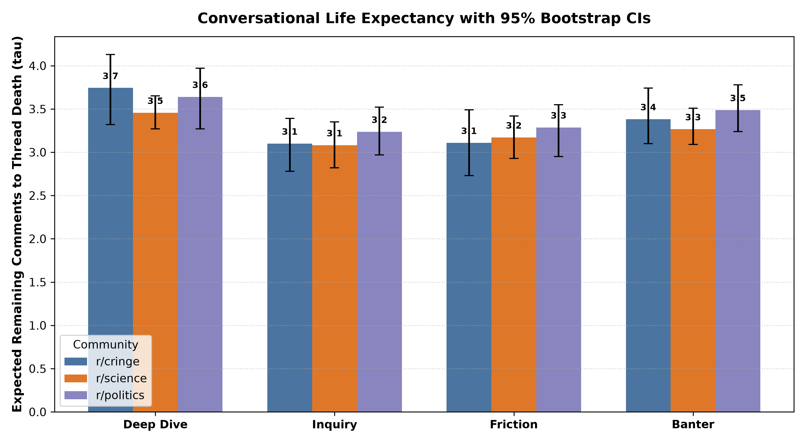

Absorbing Markov Chains, Latent Feature Geometry & Non-Parametric Statistical Inference









Solves pseudoreplication by resampling entire conversation trees with replacement.
| State | Mean τ | Std Err | 95% CI Lower | 95% CI Upper |
|---|---|---|---|---|
| Deep Dive | 3.59 | ±0.12 | 3.37 | 3.80 |
| Inquiry | 3.16 | ±0.08 | 3.00 | 3.33 |
| Friction | 3.22 | ±0.09 | 3.03 | 3.39 |
| Banter | 3.40 | ±0.08 | 3.24 | 3.57 |
Non-parametric permutation test comparing Frobenius distance ||P_A - P_B||_F.
| Community Comparison | Frobenius (DF) | Empirical p-value | Significance |
|---|---|---|---|
| r/science vs r/politics | 0.1801 | 0.122 | Not Sig (p = 0.538) |
| r/science vs r/cringe | 0.2767 | 0.004 | Significant (p < 0.05) |
| r/politics vs r/cringe | 0.2522 | 0.016 | Significant (p < 0.05) |